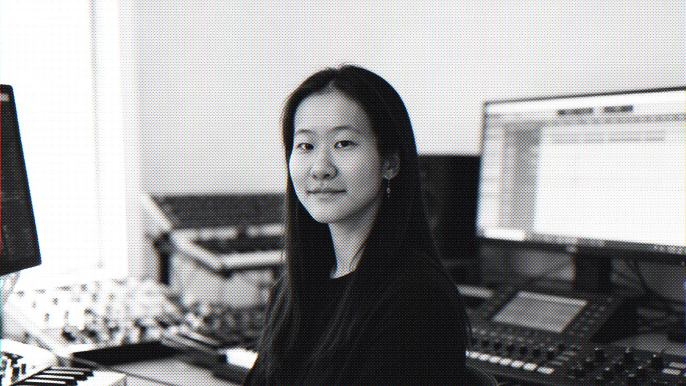

Sachie Kobayashi
INSTRUCTOR
Composer / Artist / Educator

ジュネーブ高等音楽院（Haute école de musique de Genève）にて Master of Arts HES-SO en pédagogie musicale（高等音楽院での音楽教育資格）を取得。
東京、スイス、フランスで作曲・音楽教育を学び、アーティストビザを取得してパリを中心に活動しました。IRCAM作曲研究課程を経て、現代音楽・電子音響・映像音楽・音楽制作に携わってきました。
places / traditions / technologies と listening / sound practices が交差する場として音を捉え、作曲・DTM・理論・電子音響を、それぞれの制作へ結びつけています。
神奈川県生まれ。作曲家・アーティスト。ジュネーブ高等音楽院にて作曲・音楽理論修士および音楽教育修士課程を修了。音楽教育修士課程では、スイスの音楽教育現場における教育実習・指導実践を経験し、作曲、音楽理論、ソルフェージュ、創作指導を横断する教育方法を学びました。
また、スイスの音楽院において非常勤講師としての指導経験を持ち、初学者から専門的な制作に取り組む学生まで、それぞれの目的やレベルに応じた個別指導を行ってきました。
2021–2022年にはパリのIRCAM作曲研究課程 Cursus de composition et d’informatique musicale に参加。コンピュータ音楽、電子音響、音楽テクノロジーを含む制作を行ってきました。
これまでに Klangforum Wien、Ensemble Modern、Ensemble Proton Bern、mdi Ensemble、Orchestre de la HEM、The Geidai Philharmonia Orchestra などと協働。impuls International Composition Competition 2023 受賞、Ars Electronica Forum Wallis Selection 2020 Highly Commended、ISCM World New Music Days 2021 最終選考など、国際的な現代音楽・電子音響の文脈で活動しています。
レッスンでは、クラシック音楽の理論的基礎、現代音楽、電子音響、サウンドデザイン、Max/MSP、AIを用いた創作を横断しながら、技術だけでなく、ひとりひとりの感覚や関心から作品を育てることを重視しています。
講師からの言葉
MESSAGE
私自身も、最初から専門的な環境にいたわけではありません。10代の頃にシンセサイザーやDAWに触れ、音を作ることへの好奇心から少しずつ学び始めました。本格的に作曲を学び始めたのは20歳頃ですが、創作に年齢や出発点はあまり関係ないと考えています。
その後、日本とヨーロッパで作曲、音楽教育、電子音響を学び、異なる文化圏での生活や、舞台芸術・映像・テクノロジー・現代美術などの分野との協働を経験してきました。音楽を作ることは、単に技術を身につけることではなく、物事の見方、聴き方、考え方を少しずつ広げていく行為でもあります。
Atelier Composition Son では、そうした経験の中で得た思考法や制作の方法を、できるだけ開かれた形で社会に還元したいと考えています。子供の基礎的なソルフェージュから、音楽院・音楽大学レベルの作曲、分析、電子音響、ポートフォリオ制作まで、それぞれの目的や感覚に合わせて伴走します。
Atelier Composition Son は、規模を大きくすることを目的とせず、一人の作曲家が運営する小さなアトリエです。だからこそ、専門的な学びに関心のある方に、きめ細やかで丁寧な指導と、私自身がこれまで重ねてきた音楽経験にじかに触れていただける場でありたいと思っています。ひとりひとりの作品や関心に時間をかけて向き合うことを、何より大切にしています。
「まだ何を作りたいかわからない」という段階でも構いません。音への関心、違和感、好きな質感、漠然としたイメージの中に、作品の入口があることがあります。レッスンでは、その入口を一緒に探し、技術と言葉を少しずつ結びつけていきます。